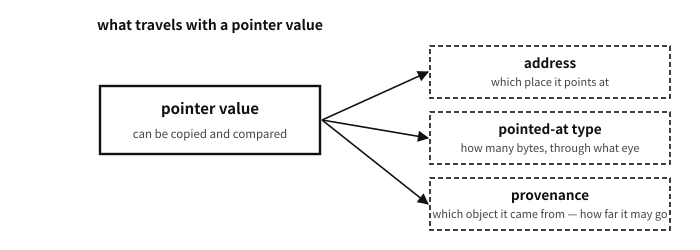

34 Objects, addresses, pointers
What this chapter builds on
Looking back
Chapter 32 said “the proper method for a function to change a variable outside is to copy and pass the variable’s address as a value.” Unfolding that with chapter 5′s knowledge — on what grounds can an address be “copied as a value”?
A. On the ground that an address is a value that can be handled like a number (chapter 5) — a locker number can be written down elsewhere, copied and handed over. In C the type of that “variable holding an address” is the pointer. What we learn today is not a new concept but dressing chapter 5′s idea in syntax.
One thing should be nailed down in advance. That it can be copied and compared does not make a pointer an integer. C keeps pointers as a different kind of value from integers and attaches a contract to them: the type pointed at, and the provenance — which object it came from. Chapter 6′s remark that “the same number need not be the same pointer” begins here, and chapter 36 finishes it properly under the name of provenance.
By the end of this chapter
&, * and sizeof, settling every credit carried since chapter 25.The questions this chapter answers
- How large is a pointer variable itself — what is
sizeof p? - Printing a variable’s address would be interesting — why did the demonstration not print address values?
- Is “an address is an integer” wrong, then?
- Then why can
void *be used as “the container that holds any pointer”?
34.1 Three notations — declaration, &, *
Pointer syntax is three pieces and no more.
Declaration — int *p; declares “a variable p holding the address of an int.” The knack of reading it is from the back: “p is a pointer (*p), and at the place it points there is an int.”
Taking an address — &n is the value “n’s address.” The & brushed past in chapter 25′s sscanf(..., &n) has finally got its formal name — the operator that detaches the number tag of the locker called n.
Dereference — *p means “go to the address written in p and that slot.” In a reading position it reads that slot’s value; on the left of an assignment it writes to that slot. That the * of a declaration, the * of an expression (dereference) and the * of multiplication use the same character is C’s notorious thrift — position is the only way to tell them apart.
The demonstration shows all three at once, including chapter 32′s homework — the proper method by which a function changes an original.
examples-en/ch34/ptr.c
#include <stdio.h>
void set_to(int *target, int value)
{
*target = value; /* it follows the address and writes to the original */
}
int main(void)
{
int n = 1;
int *p = &n; /* p holds the address of n */
printf("n at first: %d\n", n);
printf("p == &n ? %d\n", p == &n);
*p = 55; /* dereference: write where p points (= n) */
printf("n after *p = 55: %d\n", n);
set_to(&n, 99); /* chapter 28's homework — a function changes the original */
printf("n after set_to: %d\n", n);
return 0;
}
Output
n at first: 1
p == &n ? 1
n after *p = 55: 55
n after set_to: 99
Read the route of set_to(&n, 99) exactly and half of pointers is done — ① &n (the value that is an address) is copied into the parameter target (chapter 32′s copy-by-value rule is untouched!), and ② inside the function *target = value goes to that address and writes into the original slot. The world of copying values was not broken at all — what was copied happened to be an address.
34.2 sizeof — asking the size of a container
The last deferred credit — sizeof is the operator that puts out the size in bytes of a type or an object (its value is of type size_t, an unsigned integer just for sizes, printed with %zu). Chapter 25′s fgets(line, sizeof line, stdin) now reads completely: “tell fgets the number of bytes in the container called line.” Being an operator rather than a function, its value is mostly settled at compile time, and it works on a type (sizeof(int)) as well as on an object (sizeof line).
Q. How large is a pointer variable itself — what is sizeof p?
A. In this book’s verified environment (x86-64 Linux) it is 8 bytes, and so it is in most of today’s mainstream 64-bit environments. In that environment, too, every object pointer has the same size whatever it points at (int* or double*).
That, however, is not a guarantee of the standard. The standard settles neither the size nor the representation of a pointer. There is no rule that different object pointer types must share a size and a representation (machines really existed on which char* was larger than other pointers), and a function pointer is not required to have the same representation as an object pointer either. “Word size” is not a word of the C standard but a matter of the machine. So code that needs the size never writes a number: it asks with sizeof p.
Then why distinguish the types? Because when dereferencing, the type decides “how many bytes at that address, and through what eye, to read.” Chapter 5′s refrain (what knows the lump is the reading side) is the reason pointer types exist.
A common misconception. “Pointers are a difficult and dangerous advanced feature”
The notoriety is real but half of it is misunderstanding. The concept itself is as we just saw — “write down a number and go by the number” — an ordinary story for anyone who knows the locker corridor. The real source of the notoriety is not the concept but the price of breaking the rules: code that follows an empty pointer (next chapter), or invents a number in someone else’s land (chapters 35–37), or keeps the number of a slot that has vanished (chapters 39–42), causes accidents quietly, late and largely. That is why all the remaining chapters of this part are chapters of “rules” — the concept ended today, and now we learn the safety code.Q. Printing a variable’s address would be interesting — why did the demonstration not print address values?
A. It can be done — printf("%p", (void *)&n) is the format. It was left out for honesty’s sake: address values differ on every run. Modern operating systems place a program at a different position each time for security (address space layout randomisation, ASLR — a defence so that an attacker cannot know addresses in advance). Every result printed in this book is a real capture, and putting in a value that changes every time would make “the same result” impossible to guarantee. The value of an address does not matter; the relations between addresses (same, different, adjacent) do — which is why the demonstration printed p == &n.
34.3 What kind of number is an address — name, size, order
We have said several times that a pointer cannot be seen as “just a number”. What kind of number is it, then? Splitting the uses of number into three makes the answer sharp.
| use of number | what it means | examples |
|---|---|---|
| nominal | it only distinguishes. Neither size nor order means anything | a bus number, a shirt number |
| ordinal | there is a before and after. The size of a difference may mean nothing | a rank, a floor |
| cardinal | it counts a size. Adding and subtracting mean something | three apples, 12 bytes |
Table 34.1
An address is not one of the three: it is all three, and none of them wholly.
- As a nominal number: the most basic use.
&xis the name of the object x, and whether two addresses are the same may always be asked (which is why==and!=are allowed even between different objects, appendix A). This is exactly what a locker number does. - As an ordinal number: within one array, before and after mean something.
&a[1] < &a[2]is true, and on that rest sorting, searching and bounds checks. But between different arrays the question cannot be asked — which is why ordering them is outside the contract (appendix A). What has an order is not addresses in general but addresses within one object. - As a cardinal number: the difference of two addresses counts — not bytes but elements (chapter 37).
&a[4] - &a[1]is 3, meaning “three elements lie between”. And this subtraction, too, means something only within one array.
In short: an address may always be used as a nominal number; as an ordinal or a cardinal number only within one object. Half the strangeness of C’s pointer rules lives here — we learned numbers as things that are all three at once, while an address is whichever of the three the context allows.

Figure 34.1 — The three things that travel with one pointer value. The same address does not make the same pointer.
34.3.1 Why an integer, of all things
Naming an object could have been done otherwise — a name string, an index into a table, a handle; languages and operating systems have done all of these. C chose an integer for a simple reason: the machine was already doing it that way. As chapters 4 and 5 showed, a machine address is a number, adding to it gives the neighbouring slot, and CPUs have circuitry that computes “base + index × size” in one step. Choose an integer and arrays, strings and struct access all follow for free.
That choice became C’s power and its danger. The power is expressiveness — arrays arrive with no extra syntax (chapter 37), and memory can be handled in bulk (chapter 77). The danger is the illusion that the number may be handled like any other number.
34.3.2 The abstraction has thickened with time
Pointers were not always as delicate as they are now. In early C a pointer was close to a transcription of the machine address, and it was common practice to convert one to an integer, play with it and convert back. Machines were simple then — memory was one layer, instructions ran in the order written, and the compiler did not greatly rearrange what a person had written.
Since then the layers underneath have thickened.
- Memory split into levels (chapter 11) — registers, caches, DRAM, and above them virtual addresses and page tables. The number a program sees has already been translated.
- Execution began to overlap (chapter 12) — pipelines, out-of-order execution, branch prediction. “In the order written” is no longer true.
- The compiler became an editor (chapter 13) — it rewrites code wholesale so long as the observable behaviour is kept. One of the premises that rewriting rests on is “this pointer does not touch that object”.
The thicker those layers grew, the more the language had to ask of pointers. For a compiler to reorder on the premise that “distinct objects do not touch one another”, it needs a promise that the program will not break that premise. So pointers have drifted away from being numbers and been refined into located values with a contract — the alignment rules (chapter 36), provenance (chapter 36), and the rule against forming an address outside its array (chapter 37) are all clauses in that direction.
Q. Is “an address is an integer” wrong, then?
A. It is more accurate to say it is half right. At the layer of representation, addresses on today’s mainstream machines are represented as integers, which is why the standard provides the passage through uintptr_t (chapter 36). But at the layer of the language a pointer is not an integer type, and clauses attach to it that no integer has — where it came from, how far it may go, what alignment it stands on.
The place where the difference shows most clearly is addition and subtraction. An integer’s +1 always adds one; a pointer’s +1 moves by the size of the type pointed at (chapter 37), and if the result leaves the range of the original object it is outside the contract by the computation alone. The same sign follows different rules. Even p - q, unremarkable for integers, means nothing if the two pointers came from different arrays.
So this book uses two sentences together — an address is represented as an integer; a pointer is not an integer. The first is a matter of the machine, the second a matter of the contract.
34.4 The size of a pointer is not one number
Here is why the answer above said “8 bytes on this machine” so carefully. The widespread belief runs: “a pointer is just an address, so within one machine they are all the same size.” On the x86-64 Linux we use today that is true, which is why the belief is so rarely contradicted. But the C standard never promised it, and real machines have broken it more than once.
What the standard actually promises is much narrower.
void *and the character-type pointers (char *,signed char *,unsigned char *) have the same representation and alignment requirements as each other. Those four go together.- Pointers to structures share a representation with one another; so do pointers to unions.
- Beyond that, nothing is promised. There is no rule that
int *anddouble *must be the same size, and none that an object pointer and a function pointer must share a representation.
Why leave it so loose — because machines really were different.
In practice. Machines where pointer sizes differed within one program
Word-addressed machines. On the Cray, the Data General Nova, the Prime 50, Honeywell hardware and their like, an address named a word rather than a byte. Which byte within the word had to be carried separately, so char * was larger than int *, or the same size with a different bit layout. C’s narrow rule — that only void * and char * share a representation — was written to accommodate that world.
Segmented x86 (16-bit DOS and Windows). near pointers (a 16-bit offset) and far/huge pointers (32-bit segment:offset) lived in the same program. Which was which was decided by the memory model — in the medium model code pointers were far and data pointers near; in the compact model the reverse. That is, sizeof(void (*)()) and sizeof(void *) differed inside one program.
Harvard-architecture microcontrollers. On AVR, PIC and some DSPs, code and data live in entirely separate address spaces. Function pointers have a different width from data pointers, and reading a constant out of flash needs separate instructions and a separate kind of pointer (AVR’s __flash, the PROGMEM idiom). Chapter 86′s embedded story stands on this ground.
IBM AS/400 (OS/400). Pointers were 128 bits with a tag inside them, and the hardware refused forged ones. Code that converts an address to an integer and plays with it does not work here.
Nor is this only in the past tense.
In practice. Now, and ahead
(No need to memorise the names here either. Keep only “the size and representation of a pointer are settled by the machine and the build”.)
CHERI and Arm Morello. Real hardware in which a pointer is a bundle of address, bounds and permissions (a capability). The address is 64 bits but the pointer is 128, and sizeof(void *) is 16.
Two things must be told apart here. A round trip through the official passage, uintptr_t, is supported — CHERI C’s uintptr_t is designed to carry not only the address but the provenance (the permissions and bounds), so converting a pointer to that type and back yields a pointer that can be used. This is why CHERI porting guides say “use uintptr_t instead of long”. What cannot be used is a pointer made from an ordinary integer with no provenance, or assembled by playing with the bits: it gets no valid tag.
So what CHERI blocks is not the act of converting to an integer but forging a pointer out of an address with no provenance — the place where chapter 36′s provenance stops being a standards quibble and becomes a rule of the hardware, and the reason the standard guarantees only the uintptr_t round trip.
Machines that use the high bits of an address. AArch64′s TBI (Top Byte Ignore) and MTE, and x86-64′s LAM, leave the pointer’s size alone and carry a tag in the top byte. A modern demonstration that the same size does not make “pointer = address value” true (chapter 6′s tagged pointers).
Same CPU, different ABI. x86-64′s x32 ABI uses 64-bit instructions while keeping pointers at 32 bits. WebAssembly has wasm32 and wasm64 side by side. Even with the machine fixed, the build target changes the size.
A common misconception. “Every machine is 64-bit these days, so sizeof(void *) is 8”
In the environment that runs this book’s examples it is indeed 8. But the moment that 8 is written into the code, that code can no longer travel to any of the worlds above. Two accidents are common — declaring the slot that holds a pointer in a struct as long or int, and computing the size of an array of pointers as n * 8. Both run quietly on x86-64 and collapse on a 32-bit build or on CHERI.
The rule is simple. Always ask sizeof for a size, use uintptr_t if a pointer must be held as an integer (chapter 36), and do not put a function pointer into a void *. The C standard does not guarantee that conversion — POSIX demands it separately, for the sake of dlsym.
Q. Then why can void * be used as “the container that holds any pointer”?
A. Because the standard promised exactly that one thing. Any object pointer converted to void * and back to its original type compares equal to the original. That is why malloc returns a void * and why qsort takes its comparator through void *. Two cautions: the promise covers object pointers only (function pointers are left out), and a void * knows nothing of the size of what it points at, so it can be neither dereferenced nor used in arithmetic (some compilers allow addition, but that is an extension).
char * holds a different privilege — it may look into the representation of any object, byte by byte. Put the two side by side: void * is the passage that “forgets what is pointed at”, and char * is the passage that “reads anything as bytes”. That the standard nails these two to the same representation is no accident either — on word-addressed machines these were precisely the pointers that had to carry the widest address. The detailed rules, and their price, continue in chapter 36.
The concept of the pointer is in place. The next chapter is this part’s first safety rule — how to handle “points nowhere.” The three nulls whose faces we learned in chapter 6 get their formal treatment, this time in syntax and practical rules.